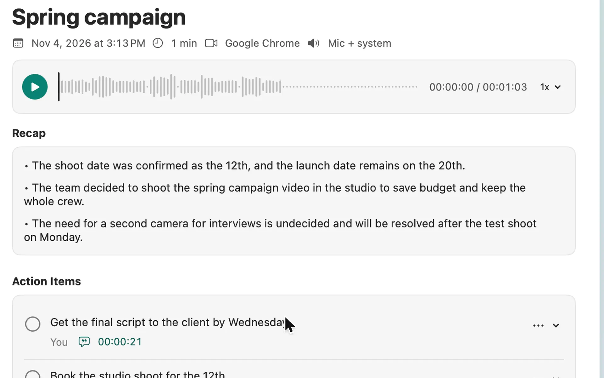
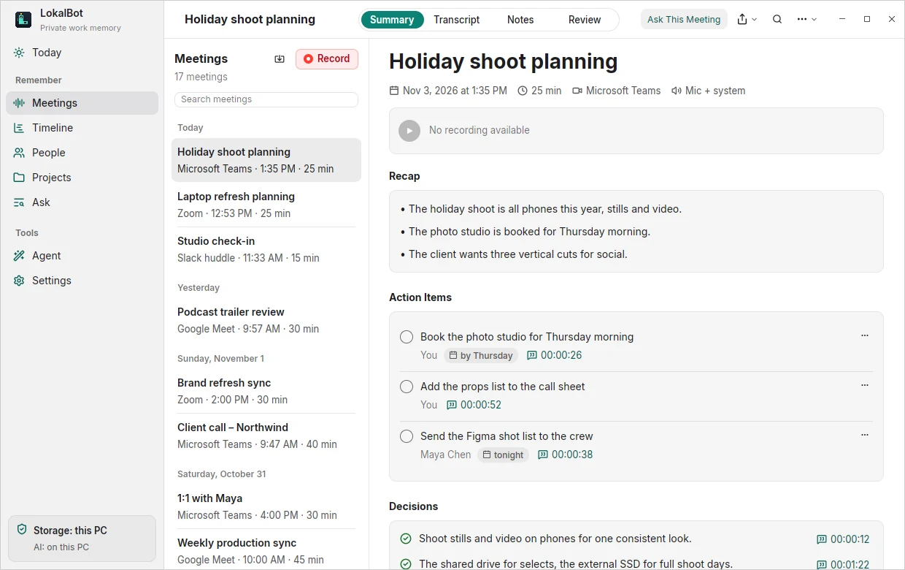
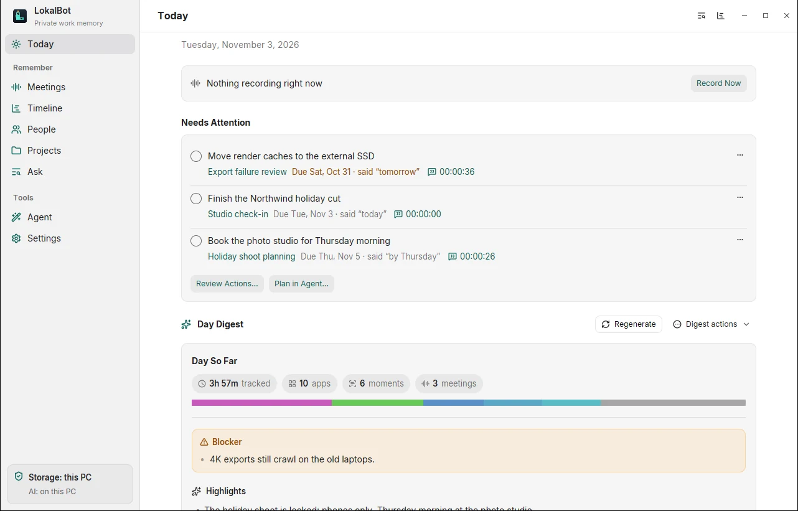

What do I still need to do?
Today shows the day's summary and every open action, each linked to the meeting it came from. Each morning the overnight review adds a look back at yesterday.
Notes from every call with no bot. One search for everything you saw and heard. Autocomplete and dictation in any app. Local by default.
LokalBot is a desktop app for Mac, with Windows and Linux in alpha. Send this page to your computer with AirDrop, Messages, or Notes, or .Copy the link and open it on your computer.
Apple Silicon, macOS 15+. Windows and Linux in alpha.

Nothing joins the call. Notes write themselves, and every action links back to the moment it was said. How recording works
Type a word you remember. One search covers your meetings and, if you turn it on, what you saw on screen.
Gray text finishes your sentence in any app, using what your meetings decided. Tab takes a word.
Hold ⌥ Space and talk. In Compose mode, say what you need and LokalBot writes it at your cursor, from your meetings if you let it.
Ask your own work a question. Answers cite their sources, and say so when one can't be verified.
Claude Code, Codex, or any MCP client can search your meetings. Read-only, and off until you turn it on.
Real app, fictional demo data.
Today shows the day's summary and every open action, each linked to the meeting it came from. Each morning the overnight review adds a look back at yesterday.
Search the folders you choose by what's in them: documents, PDF pages, pictures, and moments in recordings and video.
Retrace your day session by session. Tracking starts with app and window activity; screen text and screenshots are opt-in. If you use Claude Code or Codex, it can name the work by project and show related pull requests and commits.
See what's waiting on you and what you decided together. Name a speaker once, and LokalBot recognizes their voice in later meetings.
Track a project, and LokalBot gathers the meetings, actions, and decisions that name it. Open it for a short note on where it stands, with links back to the meetings behind it.
Not sure what to track? It suggests names that keep coming up in your meetings.
Real app, fictional demo data. Waits shortened.
Personal Context
An encrypted list of your facts, preferences, goals, and principles. Tell Ask "Remember I want the agenda the day before," add items in Settings, or let the overnight review pick up facts and preferences from your own words in meetings. Ask uses what it holds, so answers fit your work.
Optional autocomplete suggests how your sentence ends, and Tab takes the next word. It reads the message you're answering and, if you let it, what was decided in your meetings. On Mac it also writes in German, French, Italian, Spanish, and more.
How autocomplete worksHold ⌥ Space (Alt+Space on Windows and Linux), say what you want to write, and release. The words appear at your cursor. Dictation runs on your computer, and your recent dictations are kept so you can copy one again.
Select text in any app and press ⌃⇧ W (Ctrl+Alt+Space on Windows and Linux) to fix the grammar, shorten it, or translate it. Draft a reply with my memory writes a reply that uses what your meetings actually say.
Turn a meeting into a follow-up draft that you review and send. Also keep a note for every meeting in your Obsidian or Logseq folder and get weekly work logs.
Windows and Linux (alpha)
A native app for Windows 10 and 11 and for Linux has the same pages and reads the same library, so a library moves between computers. Meetings, transcription, Ask, search, day memory, dictation, autocomplete, selection actions, spoken summaries, Files, overnight review, Personal Context, and agent access all work.


It's an alpha: the Windows build isn't code-signed yet, Wayland support is partial, and a few Mac features, such as Gmail in meeting briefs, haven't been ported. On Linux, the .deb, and the .rpm on Fedora, add the LokalBot repository, so apt or dnf keeps it updated. What works and what's missing · Linux guide · Windows guide
Agent access
Claude Code, Codex, or any MCP client can search your meetings through the bundled lokalbot-cli or its MCP server. Ask what was decided, who owns an action item, or where a topic came up.
Ready to act on a meeting? Open any action item in Claude Code or Codex, and the prompt is already typed in with the task and where it came from, for you to review and send. Separately, optional Agent Mode works on your files with your approval, and it can run on your ChatGPT plan.
# Connect Claude Code over MCP $ claude mcp add lokalbot -- lokalbot-cli mcp # Or search from any shell or agent $ lokalbot-cli search "database decision" $ lokalbot-cli actions --owner me
Under the hood
Each job has its own local model. These are the Mac defaults, about 9.6 GB of model files if you use every role. Windows and Linux run the same jobs with their own local models, about 4 GB by default, on a Vulkan GPU, the CPU, or an NVIDIA GPU with CUDA (experimental).
Privacy
Recording, transcription, and the built-in models run on your computer. Screen text and screenshots are optional. You choose what to capture and how long to keep it.
Models and updates need a download. If you choose a remote model, the app asks before sending it context. Agent commands and external tools have separate permissions and data handling.
Switching
Bring your old recordings with you. Drop an MP3, M4A, WAV, MP4, MOV, or other audio or video file onto Meetings, and it becomes a meeting with a transcript, speakers, and notes.
The same bot-free capture, but transcription and summaries run on your computer. No account or subscription.
Nothing joins your call, the audio stays on your computer, and there are no minute caps.
Notes records your microphone, so with headphones on it misses the other side of the call. LokalBot records both sides and keeps every meeting searchable.
Rewind's Mac app is discontinued. LokalBot starts with app and window activity; screen text and screenshots are opt-in and deleted after 14 days by default.
Also open source. Here everything runs on your computer by default, and speaker separation, meeting detection, and a local MCP server are free.
Dictation runs on your computer and comes with meeting notes and recall, for free. For transcribing files you already have, MacWhisper is the better tool.
Competitor details were last verified on October 26, 2026. All comparisons · Alternatives for Linux and Windows
Blog
Free and open source. No account or subscription.
Download for Mac.dmg installer · or with Homebrew: brew install --cask stevyhacker/tap/lokalbot
macOS · Windows · Linux (alpha) · Release notes
Apple Silicon (M1 or later) with macOS 15+ · Windows 10 or 11, x64 · Linux x86_64
Windows and Linux are in alpha. Models download during setup, and local processing can work offline afterward. Try a sample meeting to see a transcript and notes before you record anything.
New installs start with activity-only tracking. You can turn tracking off, save visible text without pictures, or add encrypted screenshots. Text and screenshots are opt-in. Excluded apps and sites, password managers, and focused password fields are skipped. Private browser windows are captured like any other window, so exclude the browser or site to keep them out. Captured text and screenshots are deleted after 14 days by default. Moments you explicitly save stay until you unsave or delete them.
Recordings and built-in processing stay local. Network access covers model downloads, update checks, and optional agent setup. A remote model receives the context needed for a request only after you approve its server. Approved agent commands can also access the network. Connected CLI or MCP tools have their own data handling; meeting and screen-memory access have separate permissions. See the privacy policy.
Yes. Start with the built-in local models, choose another downloaded model, or connect Ollama, an OpenAI-compatible server, or, on Mac, Apple Intelligence. Summaries and chat can also run on your own ChatGPT or Claude plan, with no API key. A remote server or plan gets context only after you approve it. Transcription, summaries, and autocomplete have their own model choices. See the transcription model guide and offline setup guide.
Transcription covers 52 languages and dialects with the default Qwen3-ASR model, and alternatives such as SenseVoice for Chinese, Japanese, and Korean are available in Settings. Meeting notes are written in the meeting's language unless you choose another, and the app itself is translated into 24 languages. On Mac, autocomplete also keeps up in German, French, Italian, Spanish, and more.
Yes. It records calls in Tencent Meeting, VooV Meeting, Feishu, Lark, DingTalk, and WeCom, keyword search finds Chinese, Japanese, and Korean words anywhere in a phrase, and models can download from HF-Mirror or ModelScope instead of Hugging Face. Choose the source in Settings → Models.
Yes. LokalBot is free and open source under GPLv3. There is no account, subscription, or LokalBot server. See the fact sheet for what it includes.
Apple Silicon Macs (M1 or later) with macOS 15 or later, plus Windows 10 and 11 (x64) and 64-bit Linux in alpha. Intel Macs are not supported, and a few features are Mac only for now. Check the system requirements for memory, disk space, and what each platform supports.
No. LokalBot records your microphone and the meeting's audio on separate tracks; on Windows and Linux the second track is the meeting app where it can be separated, and otherwise everything your computer plays. Let participants know you're recording and get their consent. Read how recording works.